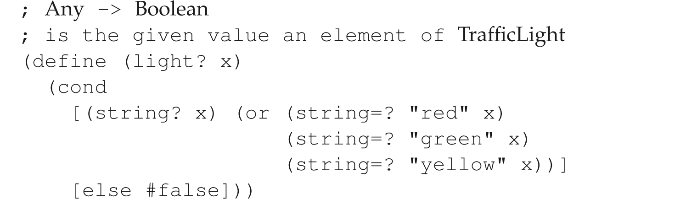

6.5 Equality Predicates
An equality predicate is a function that compares two elements of the same collection of data. Recall the definition of TrafficLight, which is the collection of three strings: "red", "green", and "yellow". Here is one way to define the light=? function:
; TrafficLight TrafficLight -> Boolean
; are the two (states of) traffic lights equal
(check-expect (light=? "red" "red") #true)
(check-expect (light=? "red" "green") #false)
(check-expect (light=? "green" "green") #true)
(check-expect (light=? "yellow" "yellow") #true)
(define (light=? a-value another-value)
(string=? a-value another-value))
When we click RUN, all tests succeed, but unfortunately other interactions reveal conflicts with our intentions:
> (light=? "salad" "greens")
#false
> (light=? "beans" 10)
string=?:expects a string as 2nd argument, given 10
Compare these interactions with other, built-in equality predicates:
> (boolean=? "#true" 10)
boolean=?:expects a boolean as 1st argument, given "#true"
Try (string=? 10 #true) and (= 20 "help") on your own. All of them signal an error about being applied to the wrong kind of argument.
The case of characters matters; "red" is different from "Red" or "RED".
A checked version of light=? enforces that both arguments belong to TrafficLight; if not, it signals an error like those that built-in equality predicates issue. We call the predicate for TrafficLight light? for brevity:

Now we can wrap up the revision of light=? by just following our original analysis. First, the function determines that the two inputs are elements of TrafficLight; if not it uses error to signal the mistake:
(define MESSAGE
"traffic light expected, given some other value")
; Any Any -> Boolean
; are the two values elements of TrafficLight and,
; if so, are they equal
(check-expect (light=? "red" "red") #true)
(check-expect (light=? "red" "green") #false)
(check-expect (light=? "green" "green") #true)
(check-expect (light=? "yellow" "yellow") #true)
(define (light=? a-value another-value)
(if (and (light? a-value) (light? another-value))
(string=? a-value another-value)
(error MESSAGE)))
Exercise 115. Revise light=? so that the error message specifies which of the two arguments isn’t an element of TrafficLight. 
While it is unlikely that your programs will use light=?, they ought to use key=? and mouse=?, two equality predicates that we briefly mentioned at the end of the last subsection. Naturally, key=? is an operation for comparing two KeyEvents; similarly, mouse=? compares two MouseEvts. While both kinds of events are represented as strings, it is important to realize that not all strings represent key events or mouse events.
We recommend using key=? in key-event handlers and mouse=? in mouse-event handlers from now on. The use of key=? in a key-event handler ensures that the function really compares strings that represent key events and not arbitrary strings. As soon as, say, the function is accidentally applied to "hello\n world", key=? signals an error and thus informs us that something is wrong.